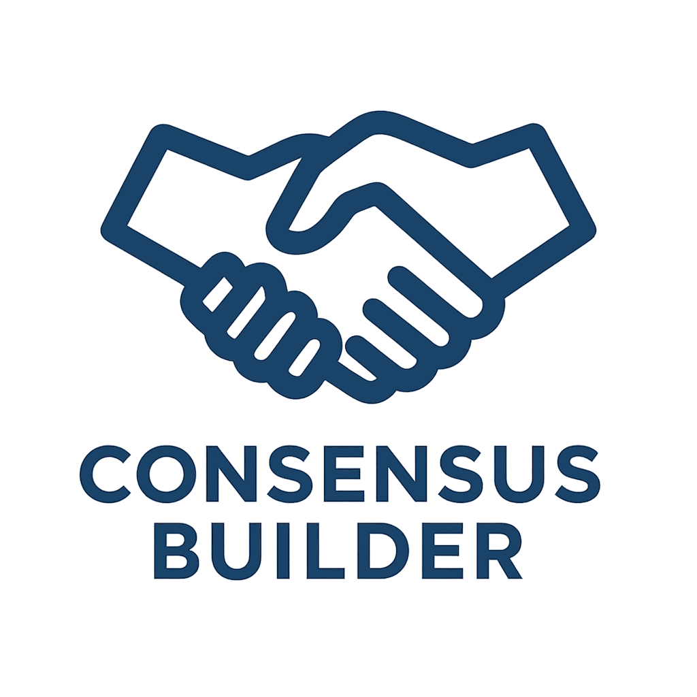

A place to begin
Shape a city people can agree on
Choose a city on the globe, or explore anywhere. Inspect parcels and buildings in 2D, 3D, or Photo view where available.
Open the city picker to travel. Use Layers to choose what you see.
Complete blocks in the loaded area, including its edges. Walking estimates use the outer perimeter at 5 km/h.
Load OSM roads, then colour the enclosed blocks. Parcel data is optional.

Consensus Builder AI-friendly
Telegram: https://t.me/urbangametheory
X: @UrbanGameTheory
Consensus Builder is Urban Game Theory's free, map-based planning tool. Hyperstition: Markets for Possible Cities is its hackathon project. Explore real parcels, compare community zoning and development proposals, and build support with the people affected. Read about the open city planning workflow, open the live hackathon demo, read the pitch deck, or see the roadmap.
Build first, propose second. New designs appear on the map immediately, so you can edit, park, compare and share them before adding formal terms. Read the step-by-step guide, or see what works today and what comes next on the roadmap.
No segments to display.